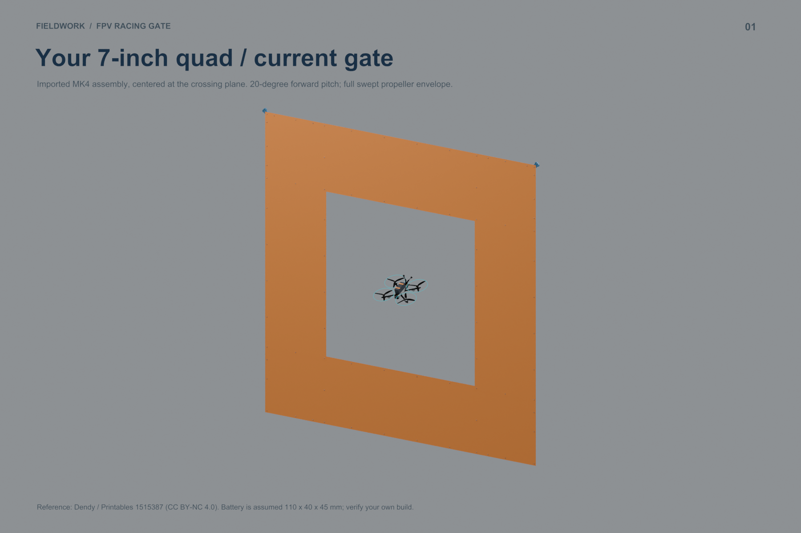
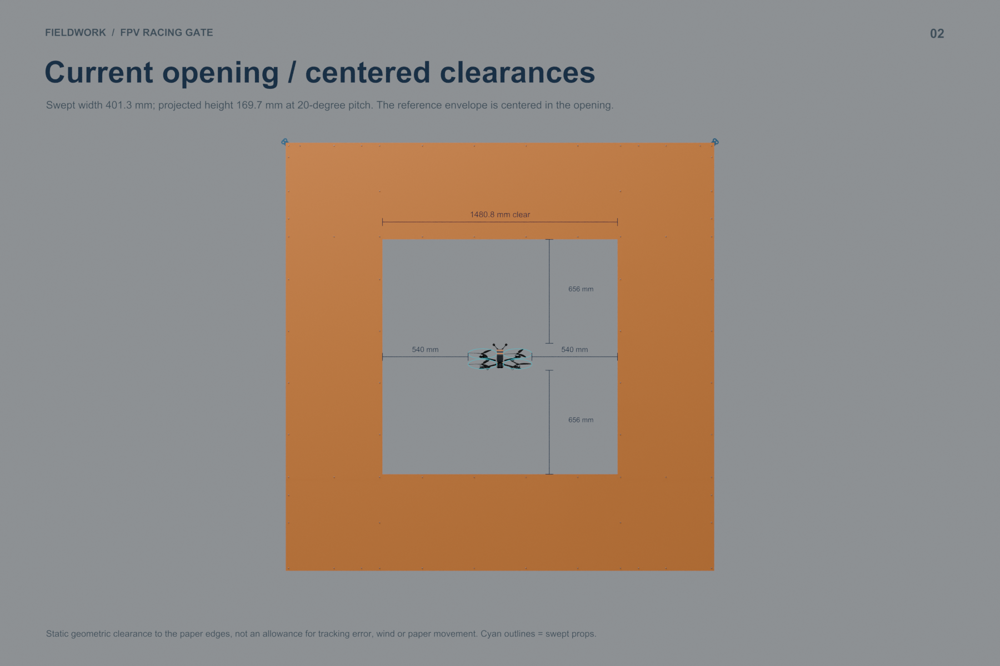
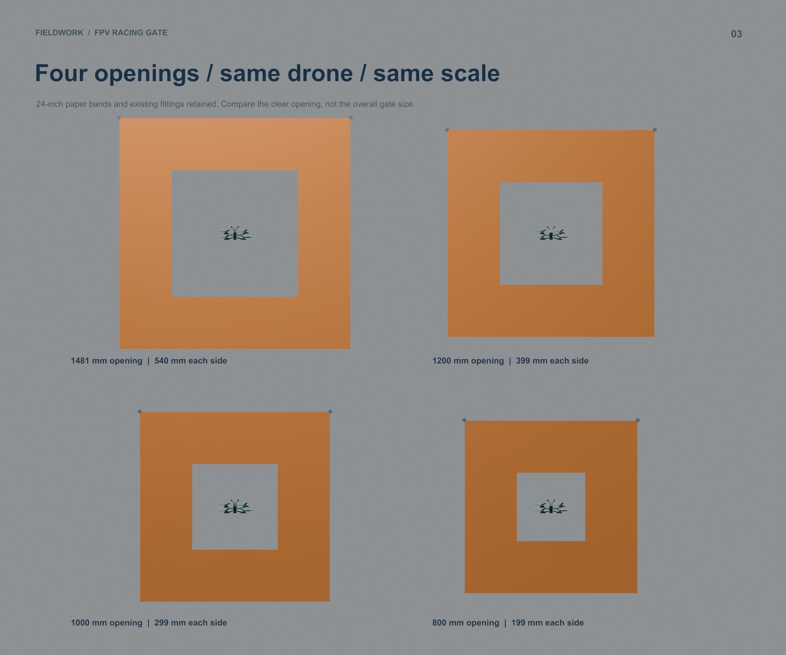
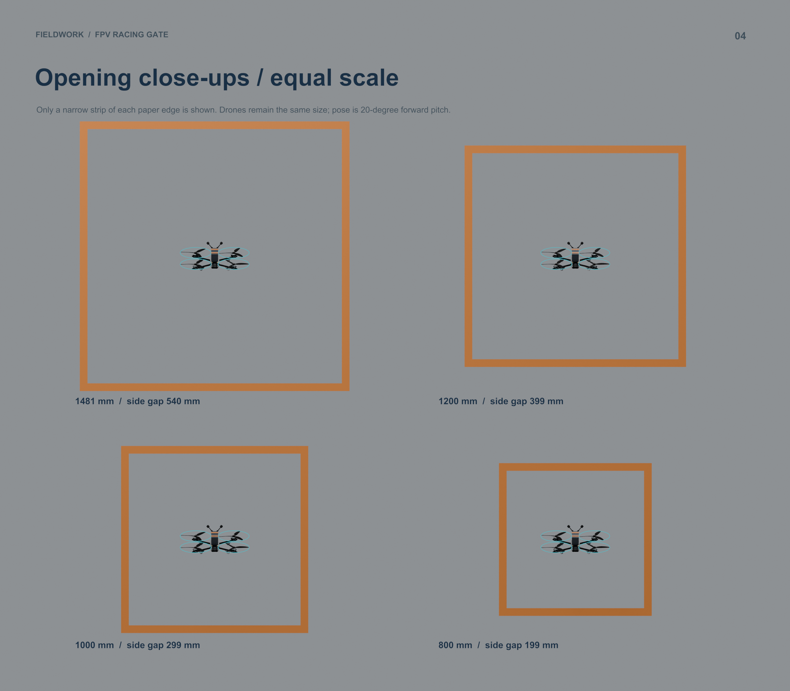
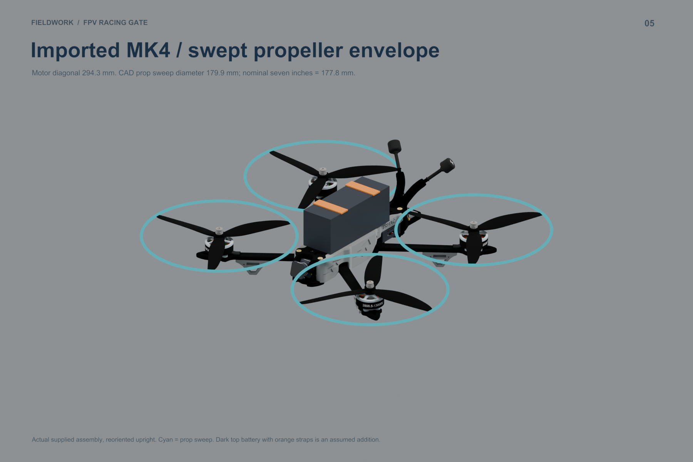
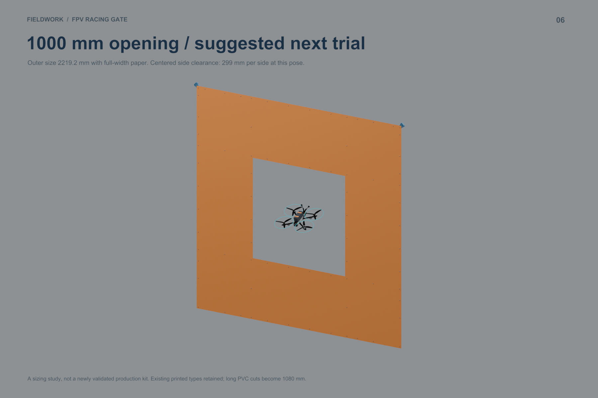
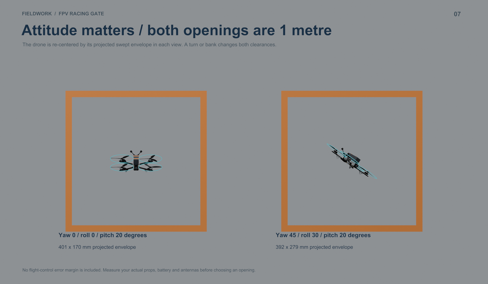

The imported drone has a 401.3 mm swept-prop width. Try a 1000 mm opening next: about 299 mm clearance per side when centered and approaching straight, versus 540 mm in the current gate.
Blender model · Visual PDF · Measurements and cut schedule · CSV
Gaps below are per edge, with 20° forward pitch and no yaw or roll. The 110 × 40 × 45 mm battery is assumed. Cyan circles show full prop sweep, not guards.
| Opening | Outer size | Side gap | Vertical gap |
|---|---|---|---|
| 1480.8 mm | 2700.0 mm | 540 mm | 656 mm |
| 1200.0 mm | 2419.2 mm | 399 mm | 515 mm |
| 1000.0 mm | 2219.2 mm | 299 mm | 415 mm |
| 800.0 mm | 2019.2 mm | 199 mm | 315 mm |







Reference: Dendy / Printables 1515387, CC BY-NC 4.0; Dendy is not the original creator of the included MK4 frame. Attribution and separate component licenses. Geometry study; physical build and flight behavior remain to be tested.